世界の見せ方の整理(2026-11-16)
概要: ハニカム地図(世界ハニカム)も Azgaar 風の地図も「世界地図」として足りない所がある。原因は、層ごとに「何を省き、何を見せるか」が決まっていないこと。そこで、見せ方は層ごとに手法を分け、全体の統一は「コンセプト」で取る方向に整理した。(ユーザーの整理を記録。)
1. 二つの地図の評価(ユーザーの判断)
| 世界ハニカム | 良い所: AIの絵が地図にうまく活きている。汎用性を持たせて作っている点が秀逸。見ようによっては十分なレベルの世界。ファンタジーらしさは Azgaar より数段上。 ダメな所: 世界地図で要る「省く」ができていない。地方・詳細地図でやる処理(1マスごとの絵)が各層に混ざる。しかも同じ絵が、拡大縮小の途中のどの層にも出てくる。拡大すると別の絵が出て、ぐちゃぐちゃになる。層の感じに統一がない。 さらに「レベル0」と呼んでいるが、縮尺はむしろ地方〜国家の地図に近い。地図の概念が崩れている。 |
|---|---|
| Azgaar風 | 良い所: 分かりやすい。 足りない所: 絵としての面白みがない。ファンタジーらしさが少ない。立体は回せない。立体は無味乾燥。 |
下の「ハニカム画面」5枚(2026-11-16 ユーザーのスクショ)が評価の対象。

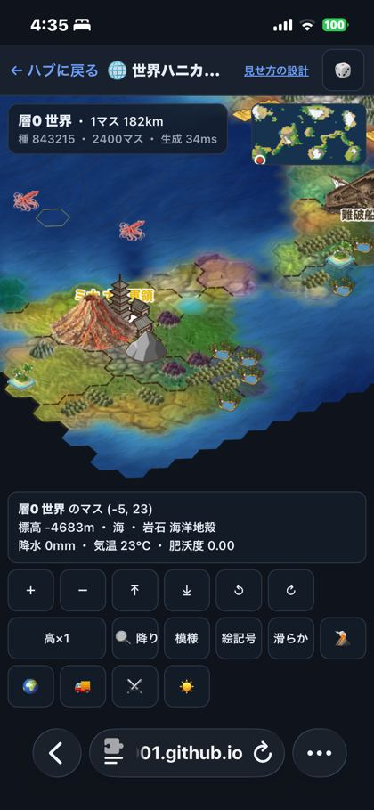

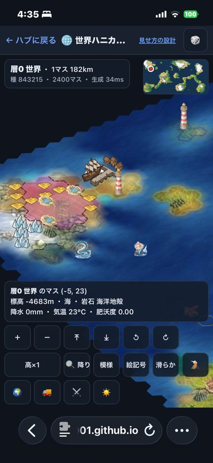

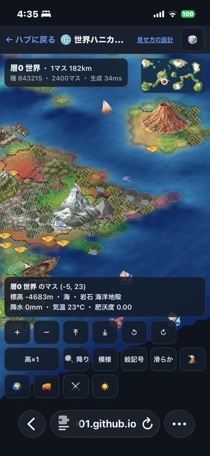

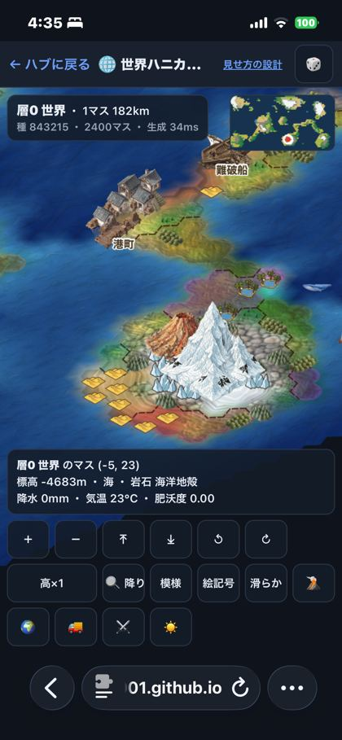

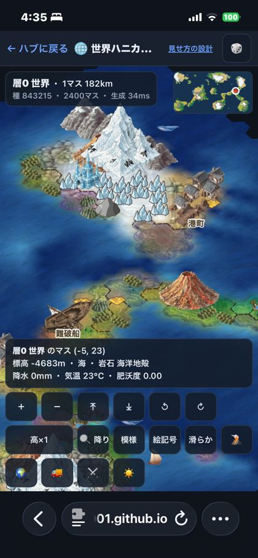
2. 方向性(ユーザーの整理)
3. 参考絵(Googleドライブ「参考の絵」23枚)から見えること
以下はClaudeが絵を見て書いた観察で、確定した判断ではない。ご確認・訂正ください。
- 世界地図は「記号と色」で語る。 1マス・1本の木のような細部は描かず、氷=白、砂漠=黄、森=緑、火山=赤黒の色の塊と、山・森・町の小さな絵記号で地域を見せている。
- 誇張する。 山脈・火山・世界樹などの目印は、縮尺に合わず大きい。数は少なく、大きく置く(=「省く」)。
- 海にも絵がある。 海岸の浅瀬の水色、深い青、波、雲や霧、怪物、船。陸の周りの余白が雰囲気を作る。
- 地図という物の飾り(縁飾り・コンパス・巻物の題・凡例・縮尺)が、「この世界を見ている」感じを作る。
- 国・勢力は、色の塊と太い名前、首都の印で見せる。国境・道・川は細い線。
- 視点は、真上寄り(古地図・色塗り)と斜め俯瞰(立体感)の二系統。立体の絵でも、写実ではなく絵画調。
- どの絵も、全体は一つの光と空気(夕方の光、縁の暗がり)で統一されている。
世界ハニカムのレベル0との違い(Claudeの見立て): 参考絵は地域=色の塊+少数の大きな記号で、ハニカムは1マス=1枚の絵。マスの数が多い分、絵の種類と数が多くなり、「世界」ではなく「地方」の見え方になっている。Azgaarは色と線はあるが、絵記号・海の演出・飾り・光がない。
4. 参考絵の一覧
縮小版(研究用)。タップで拡大。出典は分からないものが多いので、公開・配布はしない前提の資料。
A 世界全体を一枚絵で見せる(真上寄り・絵地図)

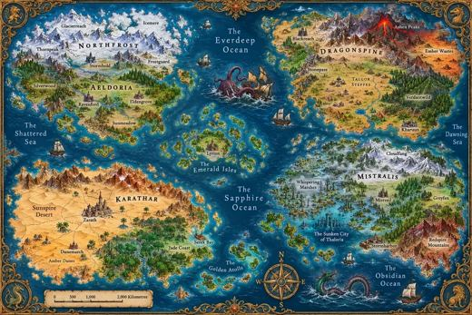

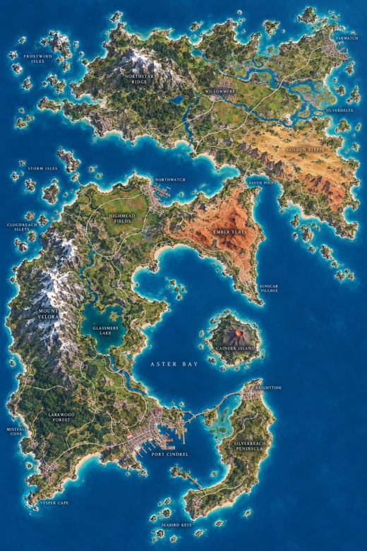

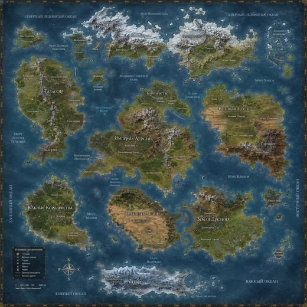

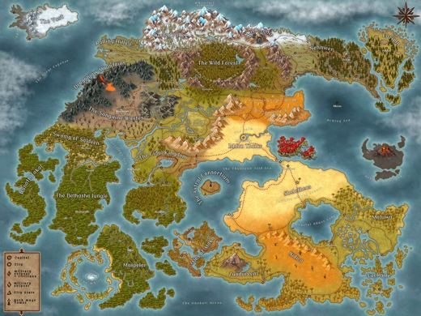

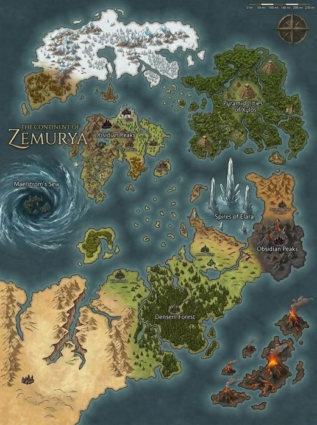

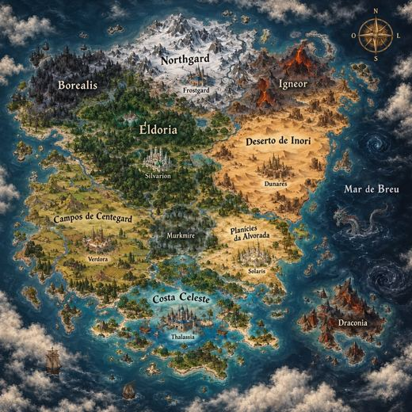

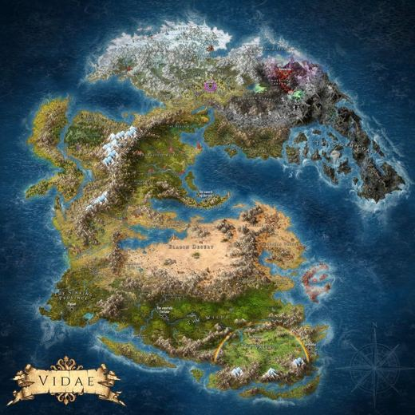

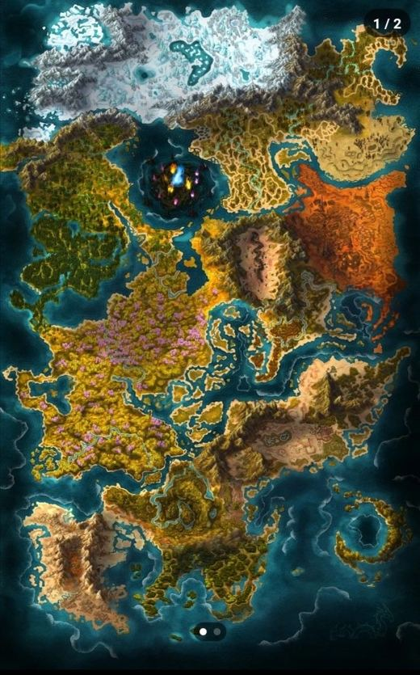
B 国・勢力を色と飾りで見せる

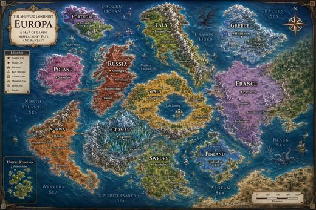

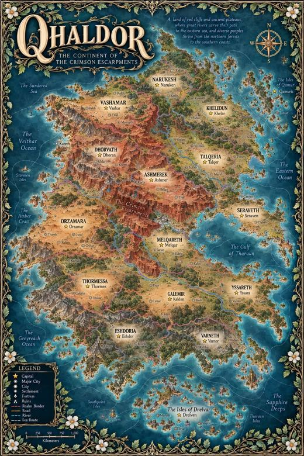

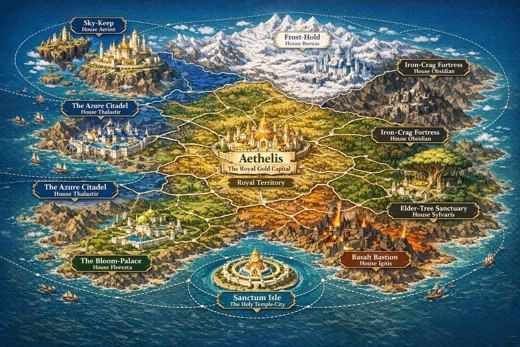

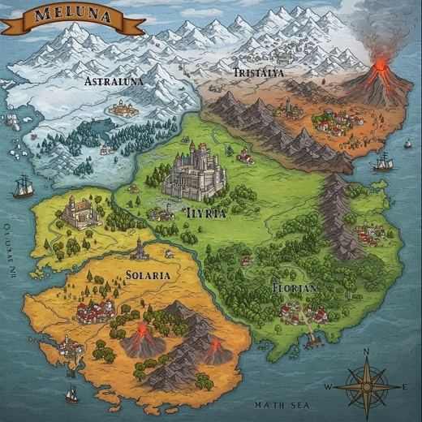
C 斜め俯瞰で立体感を出す

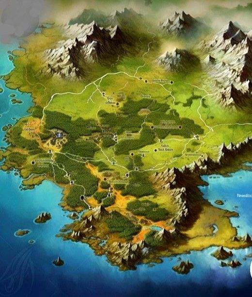

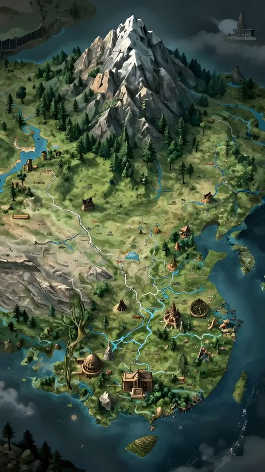

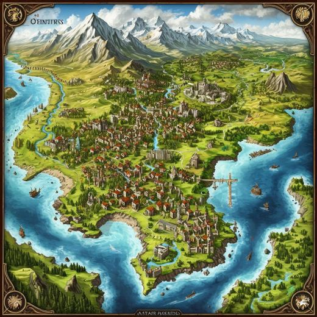

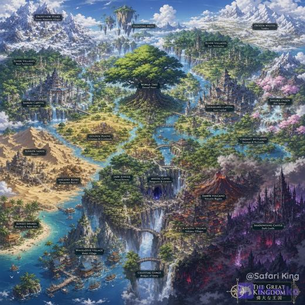

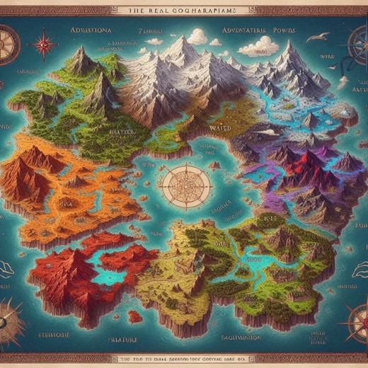

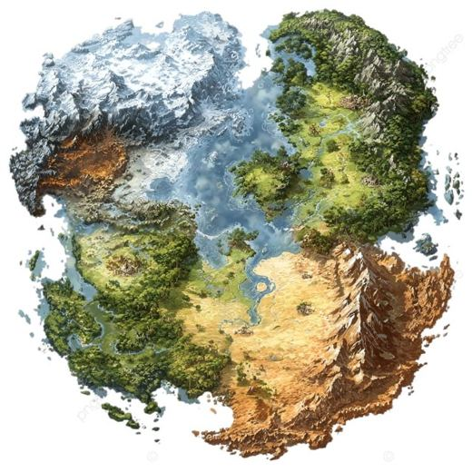
D 古地図・手描き調

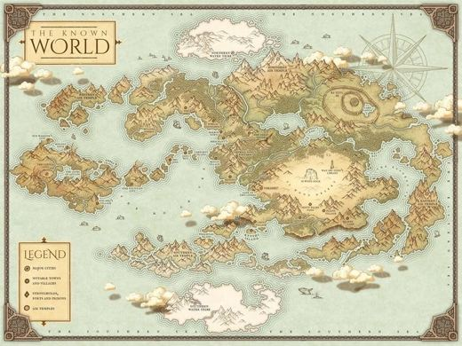

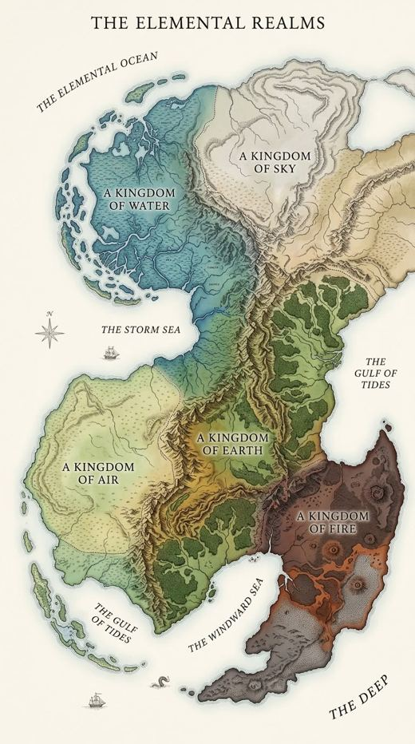

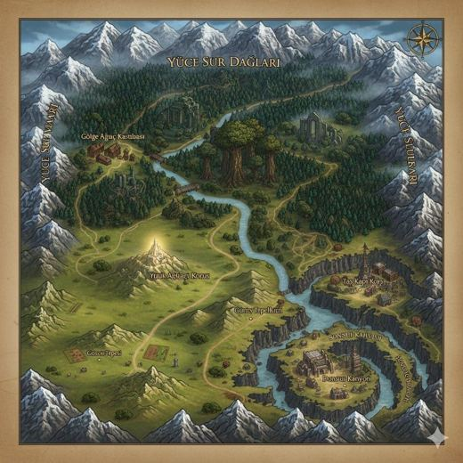

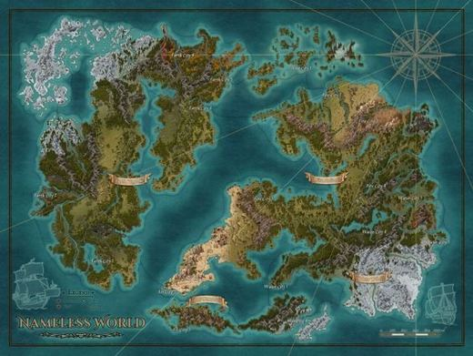

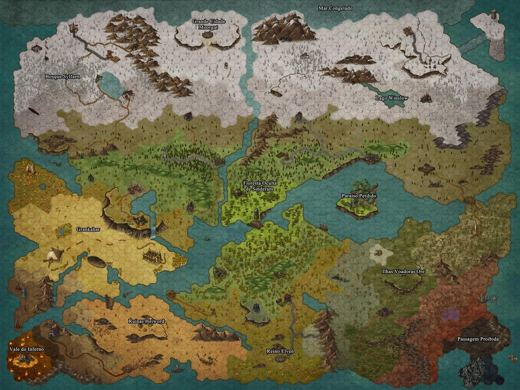
5. このあとの進め方(提案)
- 「層」の分け方を決める(例: 世界/国家間/地方/詳細。いまの7層とどう対応させるか)。
- 層ごとに、何を省き、何を見せるかを言葉にする(世界は色の塊と少数の大きな記号…など)。
- 統一コンセプトを短い文で書く(ファンタジー感・夢のある演出・芸術性と感性・稚拙な立体の味)。
- 世界の層だけ、参考絵に近い見せ方の小さな試作で確かめる(目的: 「世界らしく省けているか」を判断)。
上位の判断の更新: 2026-11-15「見せ方はAzgaar方式に統一」は、この整理で置き換え。Azgaarは地形・川・道・国境の部品の供給元としては引き続き使い、見せ方(絵)は層ごとに決める。